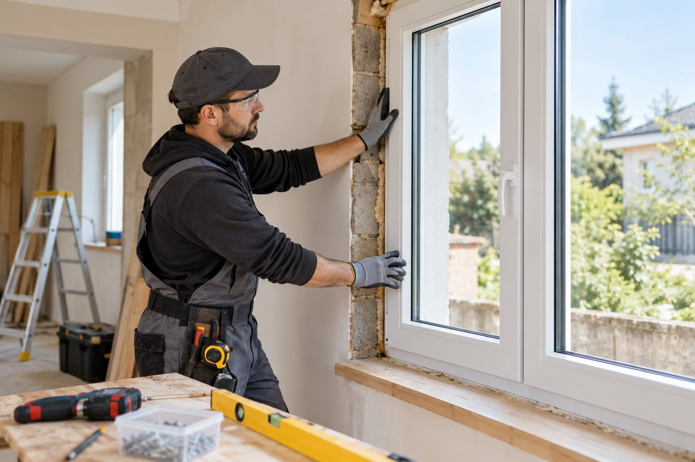

Consultare
Înțelegem proiectul.
Discutăm despre tipul locuinței, numărul de ferestre sau uși, aspectul dorit și localitatea în care se află lucrarea.
Servicii
Pagina poate explica transparent cum decurge o comandă și ce primește clientul la fiecare etapă.

Imagine demonstrativăConsultare
Discutăm despre tipul locuinței, numărul de ferestre sau uși, aspectul dorit și localitatea în care se află lucrarea.
Măsurători
Măsurătorile corecte stau la baza configurației și a ofertei finale.
Configurare
Tip de deschidere, culoare, vitraj și accesorii — opțiunile sunt așezate într-o propunere ușor de înțeles.
Montaj
O etapă importantă pentru funcționarea și aspectul ansamblului instalat.
Înainte să ne scrii
Pregătit să începem?
Formularul pregătește automat un mesaj pentru WhatsApp.
Mergi la contact